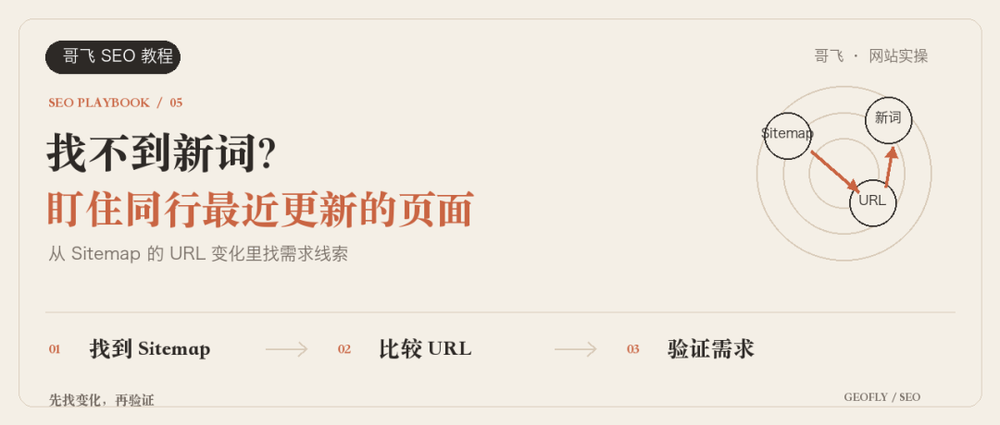
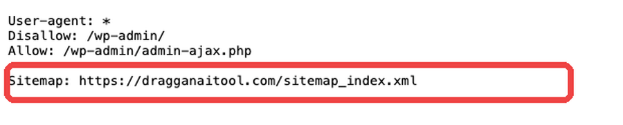
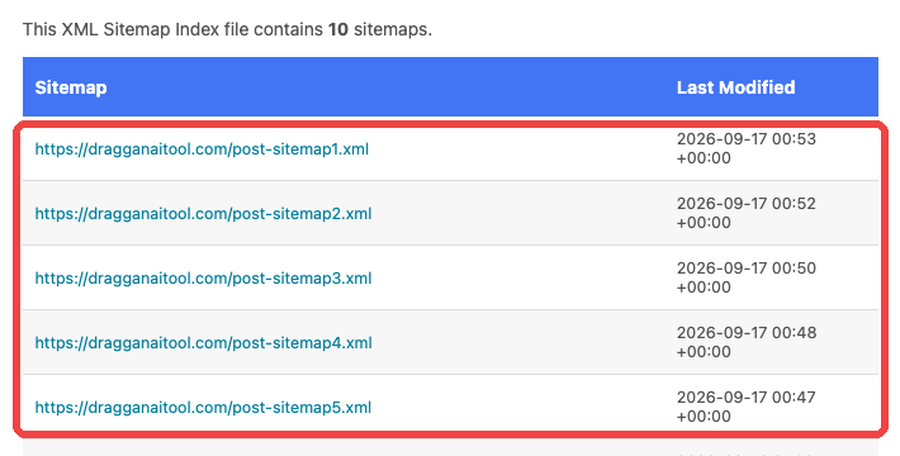
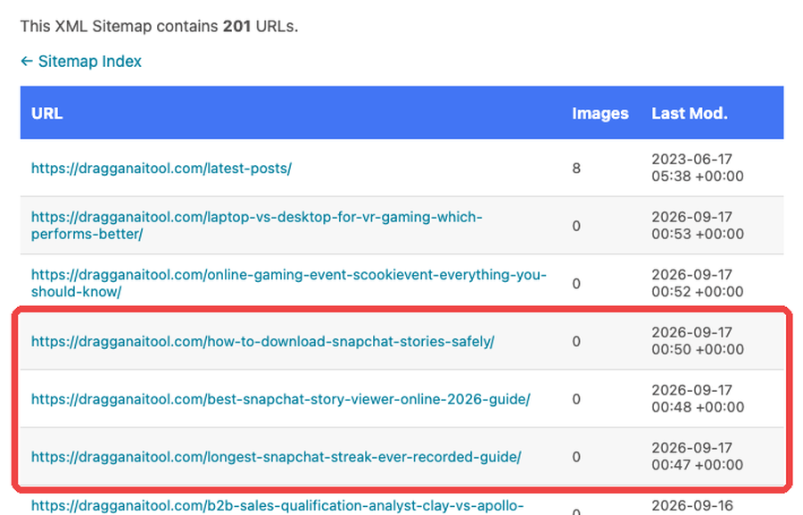

大家好，我是哥飞。
做新词，很多人已经会建站了，最头疼的还是去哪里更早找到词。
每天刷新闻和社交媒体当然可以。但一个人能看的地方有限，也很容易等到所有人都在讨论时才发现。
还有一种办法：找出那些经常上新页面的网站，让它们替你盯着市场。
2023 年，群友 Banbri 在研究 dragganaitool.com 时，从它的一个内页里发现了新词。确认趋势正在上涨后，他用国庆假期把网站做了出来。上线 9 天，GSC 拿到 7.18 万曝光和 1.97 万点击。
后来我们把这套动作总结成一句话：监控一批活跃网站的 Sitemap，从新出现在清单里的 URL 找词。
Sitemap 原本是网站交给搜索引擎的页面清单。对于找词的人来说，它同时也是一份公开的“最近更新了哪些 URL”。
第一步，先挑值得监控的网站
不要看到一个同行就加入监控清单。先找满足下面两个条件的网站：
• 网站会持续增加产品页、工具页、游戏页或文章页；
• 它过去上过能拿到搜索流量的页面。搜索这些页面对应的词，如果这个网站经常排在前面，才值得持续监控。
做游戏站，就找经常上线新游戏页面的老站；做 AI 工具，就找不断增加新模型、新功能和具体场景页的网站；做内容站，就找对行业新话题反应快的网站。
最开始不用贪多，先选 5～20 个。网站太多，新增 URL 会堆成一片，反而不知道先看哪个。
第二步，从 robots.txt 找到 Sitemap
先在域名后面加上：
/robots.txt
以 dragganaitool.com 为例，打开 https://dragganaitool.com/robots.txt，可以直接看到这一行：
Sitemap: https://dragganaitool.com/sitemap_index.xml

很多网站都会在 robots.txt 里声明 Sitemap。没有看到时，可以继续尝试：
/sitemap.xml
/sitemap_index.xml
/wp-sitemap.xml
找到 Sitemap 后先保存地址，不要急着把里面每个 URL 都当成机会。
第三步，找到真正需要监控的内容 Sitemap
大一点的网站通常不会把所有 URL 塞进一个文件，而是先放一个 Sitemap 索引。里面可能分成文章、页面、产品、分类和图片等多份清单。
dragganaitool.com 当前的 Sitemap 索引里，可以看到多份 post-sitemap，右侧还有每份文件的最后更新时间。

如果你想找新工具、新游戏或新话题，优先看会持续增加内容的那一类：
• post-sitemap：通常是文章；
• product-sitemap：通常是产品；
• game-sitemap：通常是游戏；
• page-sitemap：有时会放功能页和落地页。
文件名只是提示，最后还是要点进去看 URL。分类页、标签页和作者页一般不是我们这次要找的重点。
第四步，从最近更新的 URL 里提取候选词
打开文章 Sitemap，重点看两列：
• URL 或 <loc>：页面地址；
• Last Mod. 或 <lastmod>：页面最后修改时间。

这份清单里，多条 URL 标记了同一天的最后修改时间。地址本身已经把页面主题写了出来。去掉域名、连字符和年份后，可以整理出“下载 Snapchat 故事”“Snapchat 故事查看器”“最长 Snapchat 连续记录”等候选表达。
这里先叫“候选词”，不要马上叫“新词”。我之前在《哥飞教你一招判断关键词出现时间，找新词不再难》里，把新词定义为“出现时间不超过 12 个月的词”。Sitemap 里的 <lastmod> 只表示站长声明的最后修改时间，不能直接证明页面刚刚发布，更不能证明这个词有搜索量。
而且当前 Sitemap 记录的页面已经扩展到游戏、社交媒体、销售工具等很多方向。监控它，是为了观察 URL 清单的变化，不是照着它的所有页面抄一遍。
第五步，保存两次清单，只看新出现的 URL
刚开始不用搞复杂，也不用写程序。把每次看到的 URL 清单保存到表格里，固定比较同一份内容 Sitemap 就够了：
1. 第一次把 URL 清单保存到第一列，作为基线；
2. 第二天或下一次检查时，把新清单放到第二列；
3. 对比两列，标出只在第二列出现的地址；
4. 从这些地址中提取候选词，再进入后面的趋势和搜索结果验证。
如果打开的是 Sitemap 索引，先从里面选中一份文章、产品或游戏 Sitemap。不要一次把整站所有分类混在一起，先盯住最可能出现新需求的页面类型。
第六步，新出现的 URL 还要过三道检查
发现候选词后，再决定要不要做。
第一道，查趋势。
把候选词放进 Google Trends，看它是刚开始上涨、稳定存在，还是已经回落。时间范围先看过去 90 天，再缩短到过去 30 天和 7 天。
我之前写过《新词新站赚钱秘诀：用好谷歌趋势 Google Trends》，里面专门讲了怎么用趋势判断新词。Sitemap 负责发现，Google Trends 负责验证，两步要接起来。
第二道，查搜索结果。
直接搜索完整候选词，看 Google 给出的主要是工具、游戏、教程、新闻还是电商页面。搜索结果展示什么页面，往往说明用户期待看到什么。
同时看看前排结果的发布时间和域名。如果排在前面的页面大多是最近才发布，结果数量也不多，而且没有被大站完全占住，速度就有价值。
第三道，查自己能不能满足需求。
一个词正在上涨，不代表你应该做。你还要问：功能能不能做出来？素材是否合法？页面上线后，用户能不能立刻完成他搜索时想做的事？
这三道检查没过，先放进观察清单，不要因为同行上了页面就跟着上。
第七步，决定做内页还是新站
候选词确认值得跟进后，再决定页面放在哪里。
它和现有网站的用户、功能都高度相关，就先用老站上一个内页。老站已经有抓取、收录和权重基础，页面通常能更快进入搜索结果。
它正在快速起势，而且足以支撑一个独立产品，可以同时考虑注册域名做新站。我们反复实践过一种做法：老站靠内页抢速度，新站靠首页集中做这个词。
不管选哪一种，页面都要真正满足需求。只有一个标题和几段拼出来的介绍，监控再快也接不住用户。
今天就可以开始的监控清单
今天选 5 个网站，按下面的顺序做一遍：
先打开 robots.txt 找到 Sitemap，再从索引里进入文章、产品或游戏 Sitemap。保存当前 URL 建立基线，下一次比较两份清单，找出新出现的 URL 并提取候选词。候选词通过 Google Trends、搜索结果和产品可实现性检查后，再决定上老站内页还是独立新站。
同行持续更新的 URL 清单，本身就是一份不断变化的需求线索。把 Sitemap 监控起来，你就多了一批替你观察市场的眼睛。